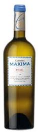
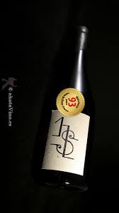
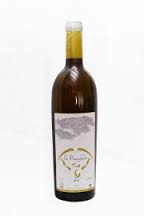
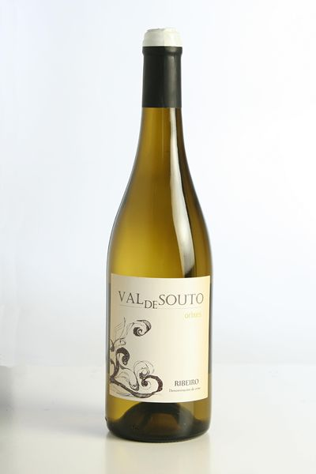

La Denominación de Origen Ribeiro, que significa "ribera del río" en gallego, es una de las cinco denominaciones de origen de vinos existentes en Galicia. La zona de producción está situada en la parte meridional de Galicia, en el borde noroccidental de la provincia de Orense, en las confluencias de los valles formados por los ríos Miño, Avia, Arnoia y Barbantiño. Los bordes montañosos aislan esta comarca de la influencia marítima atlántica, lo que determina su menor pluviosidad. El clima es templado y húmedo, con temperaturas medias de 14,5 grados centígrados. Las tierras son mayoritariamente de origen granítico y, en general, ácidas.
En 1925 tenía cerca de 6000 hectáreas de viñedos, noventa años después, en 2015, tenía una extensión total de 2350 hectáreas de viñedo están constituidas por los terrenos que se encuentran en los términos municipales y lugares siguientes: ayuntamientos de Ribadavia, Arnoia, Beade, Carballeda de Avia, Castrelo de Miño, Cenlle, Cortegada, Leiro y Punxín; las parroquias de Banga, Cabanelas y O Barón, en el ayuntamiento de O Carballiño; las parroquias de Pazos de Arenteiro, Albarellos, Laxas, Cameixa y Moldes en el ayuntamiento de Boborás; los lugares de Santa Cruz de Arrabaldo y Untes en el ayuntamiento de Orense, y del ayuntamiento de Toén los lugares de Puga, A Eirexa de Puga, O Olivar, el pueblo de Feá y Celeirón y la parroquia de Alongos; y el pueblo de A Touza del ayuntamiento de San Amaro.
Los vinos de esta denominación responden a una serie de combinaciones de exquisitos aromas afrutados y florales, que casi siempre resultan sorprendentes al elaborarse con variedades autóctonas tradicionales (Treixadura, Torrontés, Loureira, Caíño tinto, Brancellao, Sousón) y poseen una acusada personalidad que los convierte en incomparables. Los vinos blancos de Ribeiro son ligeros, frescos, secos, afrutados, de color pajizo pálido, elevada acidez fija y con una graduación alcohólica entre 9,5º e 13º. Los vinos tintos de Ribeiro son de color rojizo morado y compensados de acidez, por lo que la graduación está comprendida entre 9,5º e 12º.
|  |
Máxima Casanova.Este vino se elabora utilizando exclusivamente uva propia de Producción Interada Sostenible. Casanova MÁXIMA se obtiene con la selección de las mejores uvas del Pazo, permaneciendo el vino en depósito con sus lías durante cinco meses y una crianza en botella de al menos tres en bodega Nota de cata: De color amarillo brillante con ribetes dorados. Nariz con enorme personlidad y expresividad, con aromas de frutos blancas como manzana y pera, heno, incluso con toques minerales. En boca es potente, muy glicérico, untuoso y final largo y muy persistente. Evolucionara en botella. Alcanzará su máxima expresión en dos años. | |
|  |
Norte y Sur 2012.Bodega Norte y Sur Vinos. Vino S. Sur 2012 91.5 puntos y Sello de Oro en la Guía de Vinos Xtreme 2013. D.O. Ribeiro. Sur define una tierra, pero también el carácter de este vino. El perfil más equilibrado y “docil” de los tres, el más afable. El resultado de la pasión enológica surgida por los enólogos Pablo Ortigueira y Aurelio Vazquez. Un vino sin fronteras formado por 4 variedades, resultando la Treixadura la mayoritaria con un 75%. Resultante de una selección de uva muy exhaustiva antes de una maceración prefermentativa. Fermentación alcohólica en barrica, sin maloláctica posterior. Culminando con una crianza sobre lías en barricas de roble francés durante 5 meses. Vinos que expresan aromas de fruta, de brisa marina, junto a toques salinos y rodeados por un halo cítrico y balsámico que le aporta mucha frescura. Persisten con muy buena longitud en boca, vinos amables de buena acidez, presentando todos los condicionantes para crecer en botella para alcanzar la sabiduría. Vinos que nos muestran el camino a seguir por los blancos españoles. | |
|  |
El Paraguas Atlántico.Uvas: 85% treixadura, 9% godello y 6% albariño. Permanencia en barrica: La variedad godello permaneció tres meses de crianza en barricas borgoñonas de roble francés de 500 litros. Suelos: Situado a una altitud sobre el nivel del mar de 225 metros, el viñedo con el que trabaja Bodegas El Paraguas está compuesto por suelos arenosos. Viñedo: Situado en el término de Ribadavia (Ourense), en la desembocadura del río Avia con el Miño, ocupando una superficie de 1,2 hectáreas. Climatología: Atlántico suave con cierta influencia continental. El Paraguas Atlántico 2014 es un vino elaborado en la D.O. Ribeiro con el triunvirato de grandes uvas autóctonas gallegas: la treixadura, la albariño y la godello. Cada varietal fue elaborado por separado, bien en depósitos de acero inoxidable o bien en barricas de roble francés. El nuevo embajador de los blancos gallegos responde a una filosofía elaboradora en la que se incorporan las últimas tecnologías en vinificación al servicio de viñedos de avanzada edad, en los que la intervención de Bodegas El Paraguas es mínima y siempre al servicio de la máxima calidad de los racimos. Cata fase visual: Luce un color amarillo limón con irisaciones pajizas y verdosas. Cata fase olfativa: La nariz está dominada por la variedad treixadura, que exhibe su esplendor con frutas blancas como la pera y florales como las mimosas. Cata fase gustativa: Boca estructurada, amplia y marcadamente atlántica. Su paso fresco está enfatizado por el carácter frutal en el paso. Final largo que invita a repetir. Cata presentación etiqueta: Elegante etiqueta que evoca el carácter atlántico de Galicia. Tipo botella: Bordelesa conos. Servicio: Temperatura ambiental de entre 10 y 12º C. Disfrute: En perfecto estado hasta mediados de 2020. Maridaje: Su acompañante ideal sería cualquier tipo de marisco, desde percebes hasta centollas o nécoras. Igualmente maridará a la perfección con guisos de pescado o con pimientos rellenos de changurro. | |
|  |
Val de Souto Blanco.mg A la vista, este vino es limpio y brillante de color amarillo limón con destellos verdosos. Tiene un aroma intenso y de muy marcada complejidad, destacando notas de hierbas aromáticas tipo menta, laurel sobre un fondo frutal en el que predominan los aromas cítricos del pomelo y del limón. Es muy agradable en su paso por boca, meloso, buena estructura, largo y con una sensación final de fruta dulce que invita a seguir bebiendo. En la elaboración de este vino se han utilizado 3 tipos de uva distintos;Treixadura, Godello y Loureira. Estas uvas y su vinificación de 6 meses en tanques de acero generan una convinación magnífica, que consigue que este vino de 12,5º se beba como el agua. Vinificación: 6 meses en Tanques de Acero |